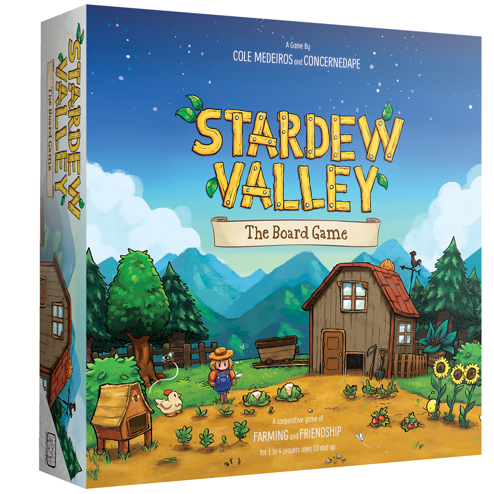

A Favorite Game of Mine: Stardew Valley
Stardew Valley is a relatively relaxing farm life RPG created by ConcernedApe, aka Eric Barone. The graphics are adorable, and there is a beautiful variety of background music. There are many different activities within it, including farming, fishing, mining, foraging, and combat. There are many different ways to play the game: you could run a wine tycoon, focus on animal husbandry, just spend your days fishing, or do a litte of everything. The NPCs have interesting stories of their own, so if befriending them is your interest, then go for it. There's something for everyone in this game. While there are some main quests, such as the main objective of the game being to complete collection bundles to renovate the community center, nothing in this game has a strict deadline, so it's perfect to wind down with.
"There will come a day when you feel crushed by the burden of modern life...And your bright spirit will fade before a growing emptiness...When that happens, my boy, you'll be ready for this gift." - The quote that started it all, by Eric Barone (through the Grandpa character)
Random Occurences in the Game
- There is a crop fairy that has a 1% chance of showing up at night (besides winter, when crops don't grow), and she will cause all crops in an area of 5x5 tiles around the selected crop to be ready to harvest, regardless of how much they had grown.
- There is a 1% chance of a witch showing up at night, and if the player has a coop, then they will get a void egg if the witch flies over it. This can be hatched into a void chicken and can produce void eggs, which sell for more than regular eggs.
- There is a rare event that can only happen once per save file: a "strange capsule" can spawn on the farm at night, which will eventually burst open. No one knows what was in the capsule.
- A stone owl statue can spawn on the farm at night, which can be used as a fun decoration.
- If animals are left outside at night, and the door of the coop or barn is closed (whichever the animals normally stay in), there is a chance of a "wild animal attack". The next day, an animal will be missing, and the other animals will show a status of being shaken up by "something bad that happened last night".
My Ranking of the Main Activities in the Game
- Fishing
- It's a good way to make money early in the game
- It's versatile: fish can be easy and relaxing to catch, or a rewarding challenge based on the species
- There is a chance of a treasure chest appearing while fishing, which can only be caught if the fish is caught: this can just be fun to collect, but it can also include rare items or artifacts to donate to the museum
- It's fun to recognize the habits of different species of fish when catching them
- Foraging
- Foraging costs no in-game stamina
- Foraged items can be good for energy, with smaller items like spring onions being alright in early game and items like blackberries serving as decent energy sources in the mines
- Foraged items can be sold for extra money, gifted to NPCs, or used in cooking recipes
- It's fun to go around the map, searching for forageables
- In spring and fall, there are berry seasons for a few days in each season, which are fun events
- Combat
- Can be a fun challenge
- Doesn't necessarily require a lot of strategy, which is good since combat is relatively quick; however, strategy can be used, with stacking rings that have good status effects for combat or using different types of weapons based on the enemy (such as swords, daggers, hammers, etc.)
- Monsters in the mines can drop loot that is valuable or can be used for crafting
- There is an Adventurer's Guild, which has "Monster Eradication Goals" that can reward the player with cool items when they meet a benchmark of monsters slain in the mines
- Farming
- Growing and harvesting crops, animal husbandry, and producing artisan goods all fall under this skill
- Watering and harvesting crops can be relaxing
- A key part of caring for animals is petting them, which is cute
- Creating a shed of machinery for producing artisan goods can be fun
- (This may be higher on my list if I did it more, but so far I've mostly stuck to basic farming rather than animal husbandry or making artisan goods)
- Mining
- Probably the most monotonous task - can be relaxing like watering and harvesting crops, but it's usually more boring
- Used for getting ore that can be used for tool upgrades and crafting
- Gem nodes can show up, and breaking them will give you cool minerals for gifting, donating to the museum, or selling
- Breaking rocks or geode nodes can give you geodes, which are fun to break open to see what's inside (but you have to take them to the blacksmith's and pay 25 gold per geode to break them)
My Ranking of the Farm Types
- Beach Farm - the prettiest farm, good for fishing, feels like a vacation spot
- Standard Farm - the easiest farm, with lots of open space for farming and setting up machinery and buildings
- Forest Farm - good for foraging, a pretty farm, less farm space
- Four Corners Farm - still has a decent amount of farm land, good for separating activities (like 1 corner for crops, 1 for animals, 1 for fish ponds, 1 for artisan good machinery)
- Hill-top Farm - versatile, has options for fishing, mining, and farming
- Riverland Farm - alright for fishing, but the fish aren't particularly valuable; hard to move around because of the bridges, hard to farm or place buildings
- Wilderness Farm - annoying; monsters attack you on your farm at night, which is not fun when you're returning home at 2 am in-game (at which point your character passes out and loses energy/money and items)
Fun Facts
| Stardrops are items that can be consumed for a permanent energy increase in the game. Each player can find 7 stardrops total. |
Stardrop |
 |
| In 2021, an official Stardew Valley board game was made. |
Board Game |
 |
| In Stardew Valley, it is possible to have a pet cat or dog. A common name that players choose for the pet cat is Miso, for some reason (including me when I choose the cat). |
Miso the Cat |
 |
Until an update patched it out, there was an exploit where a player could name themselves up to 3 item ids, each in brackets.
This glitch allowed players to receive the corresponding items with the ids each time an NPC said the player's name.
A common item used with this glitch is the Legend Fish, the most valuable of the legendary fish, which can only be caught once each. |
Guide for Item ID Glitch |
 |
| Dinosaur eggs can be found when fishing, in the Skull Cavern, or when digging up artifact spots, and the eggs can then be hatched into dinosaurs in the farm coop's incubator. |
How To Find A Dinosaur Egg |
 |
| A rare item in the game is the prismatic shard. Taking this to the desert, near the Skull Cavern mines, and holding it in between the three pillars will exchange the shard with the best sword in game (without enhancements). |
Galaxy Sword from Prismatic Shard |
 |
| The prismatic shard is a loved gift for all NPCs except for one, who hates it. |
Prismatic Shard |
 |
Contact Information for Fans
Email: stardewfans@gmail.com
Phone: 909-578-7401